Лабораторна робота · 05
Лабораторна робота 5
Тема та мета
Тема: Рекурсивні обчислювальні процеси.
Мета: Опанувати побудову рекурсивних функцій, визначення базової умови та рекурсивного переходу. Порівняти рекурсивний та ітераційний способи розв’язання задачі, визначити глибину рекурсії й кількість ітерацій.
Умова завдань
Завдання 1
Увести з клавіатури натуральне число n. Знайти суму його цифр, використовуючи рекурентне означення функції f(n). Реалізувати також ітераційний спосіб обчислення. Порівняти результати, визначити глибину рекурсії та кількість ітерацій циклу.
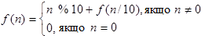
Умова завершення: для n = 0 сума цифр дорівнює 0. Умова продовження: остання цифра додається до суми цифр числа без останньої цифри.
Завдання 2
Вкладник поклав у банк sum грошових одиниць під percent відсотків за один період. Усі дані вводяться з клавіатури. Використовуючи рекурсію, визначити величину вкладу після months періодів. Масиви та рядки для розв’язання задачі не використовувати.
Контрольний тест: початкова сума 1000, ставка за період 1,25%, кількість періодів 12; результат — приблизно 1160,75.
Аналіз завдань
Завдання 1
Остання цифра числа визначається як n % 10, а число без останньої цифри — як n / 10 із цілочисельним діленням. Рекурсивна функція повторює ці операції для коротшого числа, поки n не стане нулем. Ітераційна реалізація накопичує суму в циклі та рахує його повторення.
Для числа 123456 обидва способи дають 21. У коді лічильник depth збільшується після перевірки n == 0, тому для числа 123456 значення depth та iterations дорівнюють 6. Загальна кількість викликів рекурсивної функції разом із базовим викликом дорівнює 7.
Завдання 2
За кожний період до поточної суми додається sum · percent / 100. Нова сума стає основою для наступного нарахування. Лічильник currentMonth збільшується до значення months, після чого рекурсивна функція повертає накопичену суму.
Блок-схеми
Завдання 1
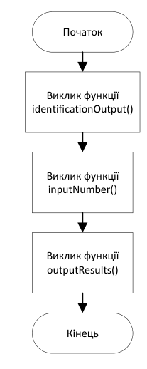
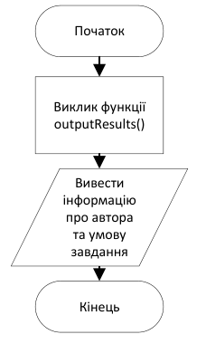
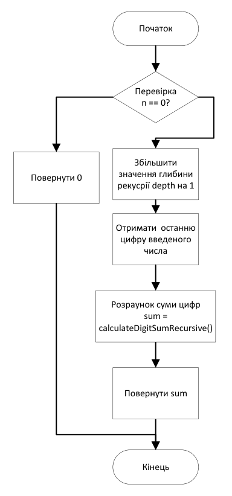
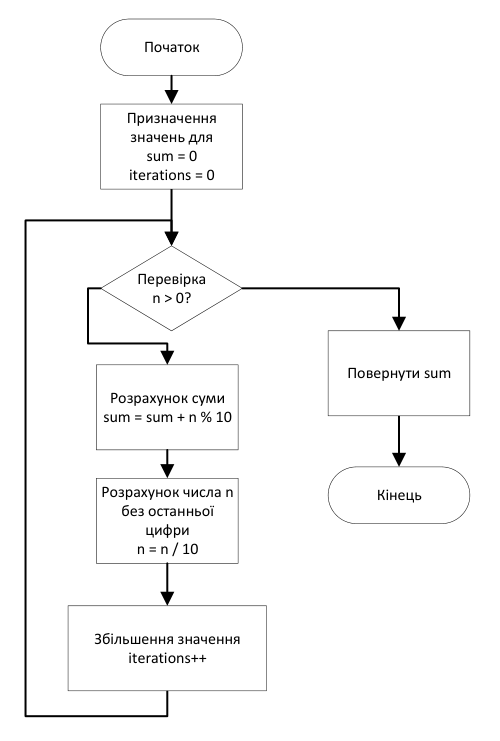
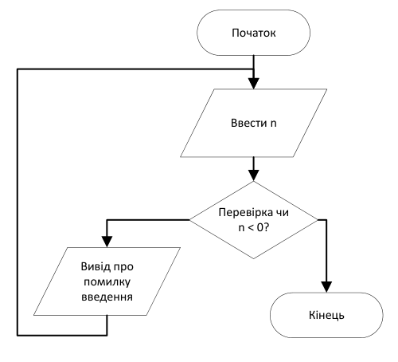
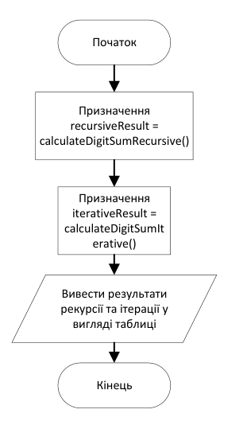
Завдання 2
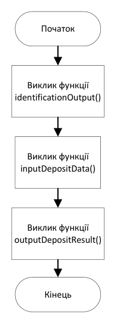
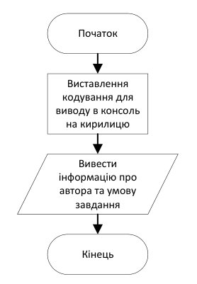
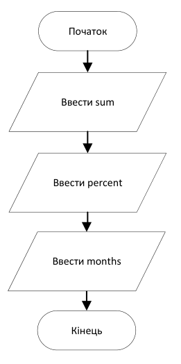
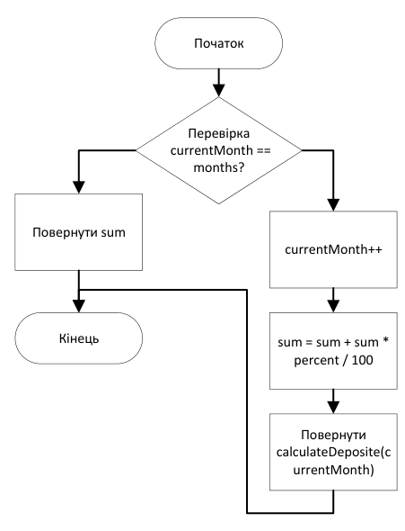
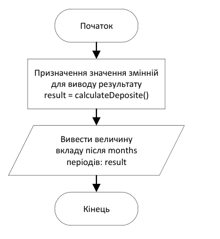
Коди програм
Завдання 1
#include <iomanip>
#include <iostream>
#include <windows.h>
using namespace std;
int n = 0; // Число для обчислення суми його цифр
int depth = 0; // Кількість рекурсивних викликів функції
int iterations = 0; // Кількість ітерацій циклу
/// <summary>
/// Функція для виведення інформації про автора та умову завдання
/// </summary>
void identificationOutput()
{
SetConsoleOutputCP(1251);
SetConsoleCP(1251);
cout << "Анастасьєв Володимир ІПЗ-11 Лабораторна робота 5 Завдання 1" << endl;
cout << "Знайти суму цифр натурального числа n введеного з клавіатури. "
<< "Сума цифр дорівнює останній цифрі плюс уся сума цифр числа "
<< "без останньої цифри" << endl;
cout << "f(n) = { n % 10 + f(n/10), n != 0" << endl;
cout << " { 0, n = 0" << endl;
cout << "========================================" << endl;
}
/// <summary>
/// Функція для рекурсивного обчислення суми цифр числа
/// </summary>
/// <param name="n">Число, сума цифр якого обчислюється</param>
/// <param name="depth">Кількість рекурсивних викликів функції</param>
/// <returns>Сума цифр числа</returns>
int calculateDigitSumRecursive(int n, int& depth)
{
if (n == 0)
{
return 0;
}
++depth;
return n % 10 + calculateDigitSumRecursive(n / 10, depth);
}
/// <summary>
/// Функція для ітеративного обчислення суми цифр числа
/// </summary>
/// <param name="n">Число, сума цифр якого обчислюється</param>
/// <param name="iterations">Кількість ітерацій циклу</param>
/// <returns>Сума цифр числа</returns>
int calculateDigitSumIterative(int n, int& iterations)
{
int sum = 0; // Сума цифр числа
while (n > 0)
{
sum += n % 10;
n /= 10;
++iterations;
}
return sum;
}
/// <summary>
/// Функція для введення значення числа
/// </summary>
void inputNumber()
{
cout << "Введіть значення n: ";
cin >> n;
while (n < 0)
{
cout << "Значення n повинно бути 0 або більше!" << endl;
cin >> n;
}
}
/// <summary>
/// Функція для виведення результатів обчислення на консоль
/// </summary>
void outputResults()
{
int recursiveResult = calculateDigitSumRecursive(n, depth); // Результат рекурсивного обчислення
int iterativeResult = calculateDigitSumIterative(n, iterations); // Результат ітеративного обчислення
cout << setw(23) << "Результат" << setw(15) << "Кількість" << endl;
cout << "========================================" << endl;
cout << "Рекурсія " << setw(10) << recursiveResult << setw(15) << depth << endl;
cout << "Ітерація " << setw(10) << iterativeResult << setw(15) << iterations << endl;
}
/// <summary>
/// Головна функція програми
/// </summary>
/// <returns>Код завершення програми</returns>
int main()
{
identificationOutput();
inputNumber();
outputResults();
}Завдання 2
#include <iostream>
#include <Windows.h>
using namespace std;
float sum; // Початкова сума депозиту
float percent; // Відсоткова ставка депозиту
int months; // Кількість місяців депозиту
int currentMonth = 0; // Номер поточного місяця
/// <summary>
/// Функція для виведення інформації про автора та умову завдання
/// </summary>
void identificationOutput()
{
SetConsoleOutputCP(1251);
SetConsoleCP(1251);
cout << "Анастасьєв Володимир ІПЗ-11" << endl;
cout << "Вкладник поклав в банк sum грошових одиниць під pr "
<< "відсотків за один період." << endl;
cout << "Усі дані вводити з клавіатури. Використовуючи рекурсію, "
<< "визначити величину вкладу по завершенні m періодів часу." << endl;
cout << "============================================================" << endl;
}
/// <summary>
/// Функція для введення початкових даних депозиту
/// </summary>
/// <param name="sum">Початкова сума депозиту</param>
/// <param name="percent">Відсоткова ставка депозиту</param>
/// <param name="months">Кількість місяців депозиту</param>
void inputDepositData(float& sum, float& percent, int& months)
{
cout << "Введіть суму депозиту: ";
cin >> sum;
cout << "Введіть відсоток: ";
cin >> percent;
cout << "Введіть кількість періодів: ";
cin >> months;
}
/// <summary>
/// Функція для рекурсивного обчислення суми депозиту
/// </summary>
/// <param name="currentMonth">Номер поточного місяця</param>
/// <returns>Сума депозиту після завершення заданої кількості місяців</returns>
float calculateDeposit(int& currentMonth)
{
if (currentMonth == months)
{
return sum;
}
++currentMonth;
sum += sum * percent / 100;
return calculateDeposit(currentMonth);
}
/// <summary>
/// Функція для виведення результату обчислення депозиту
/// </summary>
/// <param name="months">Кількість місяців депозиту</param>
void outputDepositResult(int months)
{
float result = calculateDeposit(currentMonth); // Результат обчислення суми депозиту
cout << "Величина вкладу після завершення " << months
<< " місяців становить: " << result << " ГРН" << endl;
}
/// <summary>
/// Головна функція програми
/// </summary>
/// <returns>Код завершення програми</returns>
int main()
{
identificationOutput();
inputDepositData(sum, percent, months);
outputDepositResult(months);
}Перевірка розрахунків
Завдання 1
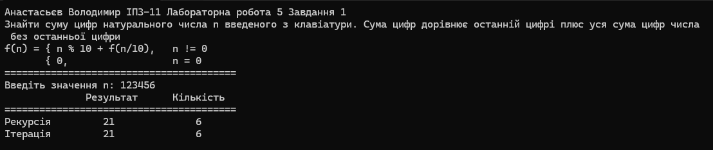
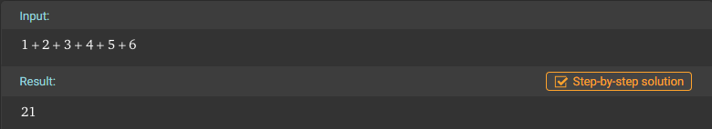
Завдання 2
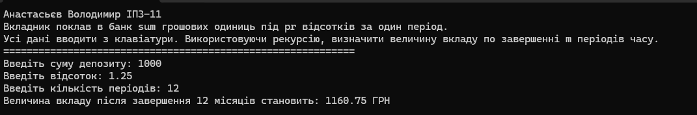
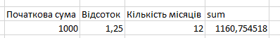
Висновки
У ході лабораторної роботи було опановано побудову рекурсивних обчислювальних процесів. Закріплено визначення умови завершення рекурсії та переходу до простішого підзавдання. Розглянуто, як повторний виклик функції дозволяє послідовно обробляти число або виконувати нарахування за окремими періодами.
У першому завданні суму цифр числа визначено рекурсивним та ітераційним способами. Для контрольного числа 123456 обидва обчислення дали результат 21. У наведеному коді лічильник depth враховує лише виклики з ненульовим аргументом, тому для цього числа обидва лічильники дорівнюють 6. Базовий виклик для n = 0 завершує рекурсію без збільшення depth.
Обидва способи обробляють кожну цифру один раз, тому кількість основних дій зростає пропорційно кількості цифр. Ітераційний спосіб використовує сталу кількість допоміжних змінних, тоді як рекурсивний потребує збереження активних викликів у стеку. Це дозволило порівняти способи не лише за результатом, а й за організацією виконання.
У другому завданні застосовано рекурсію для обчислення депозиту з нарахуванням відсотків на поточну суму. Для початкового вкладу 1000, ставки 1,25% за період і 12 періодів отримано приблизно 1160,75. Результат узгоджується з контрольним розрахунком в Excel, де наведено більше десяткових знаків.
Робота закріпила навички аналізу рекурсивних алгоритмів, визначення базового випадку, підрахунку повторень та перевірки результатів незалежним розрахунком. Побудовані блок-схеми відображають послідовність виконання функцій і умови завершення обчислень.